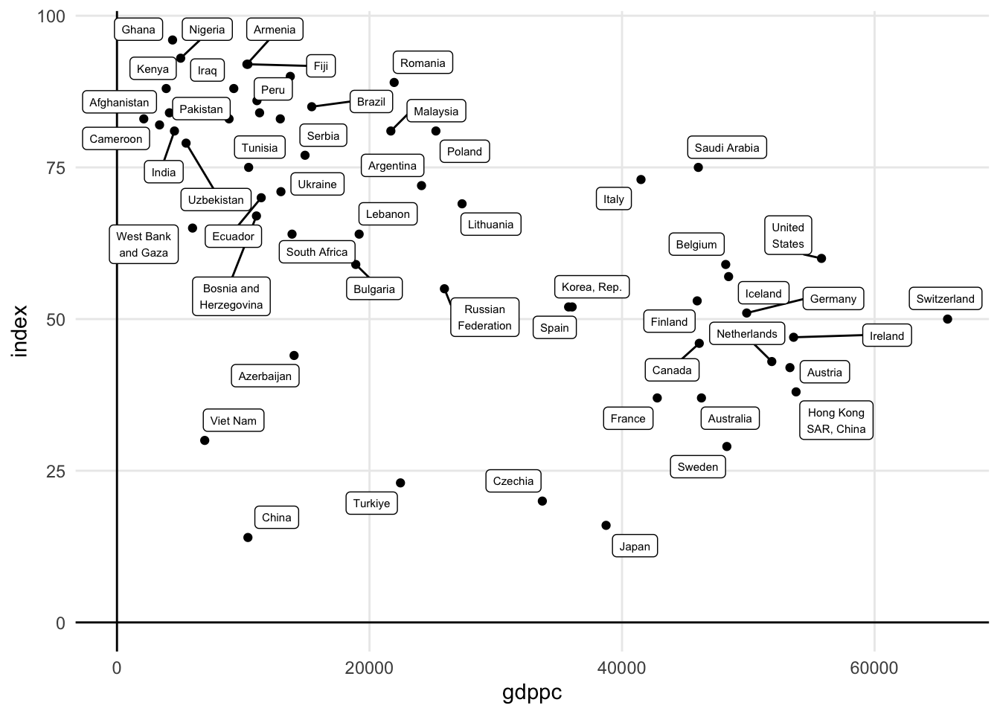
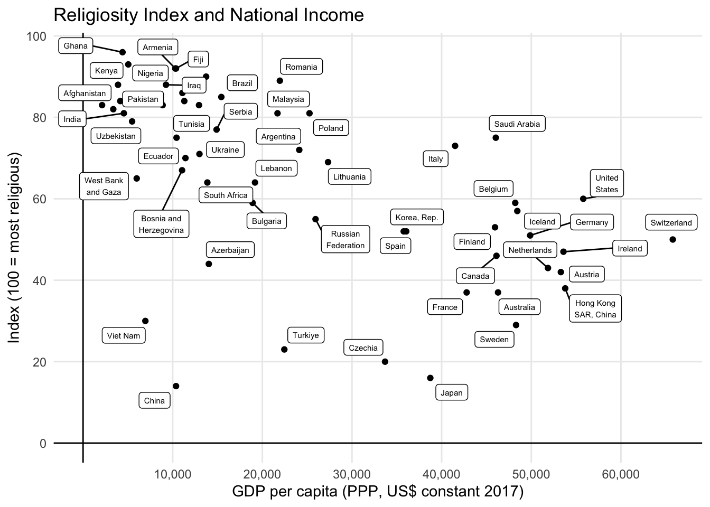
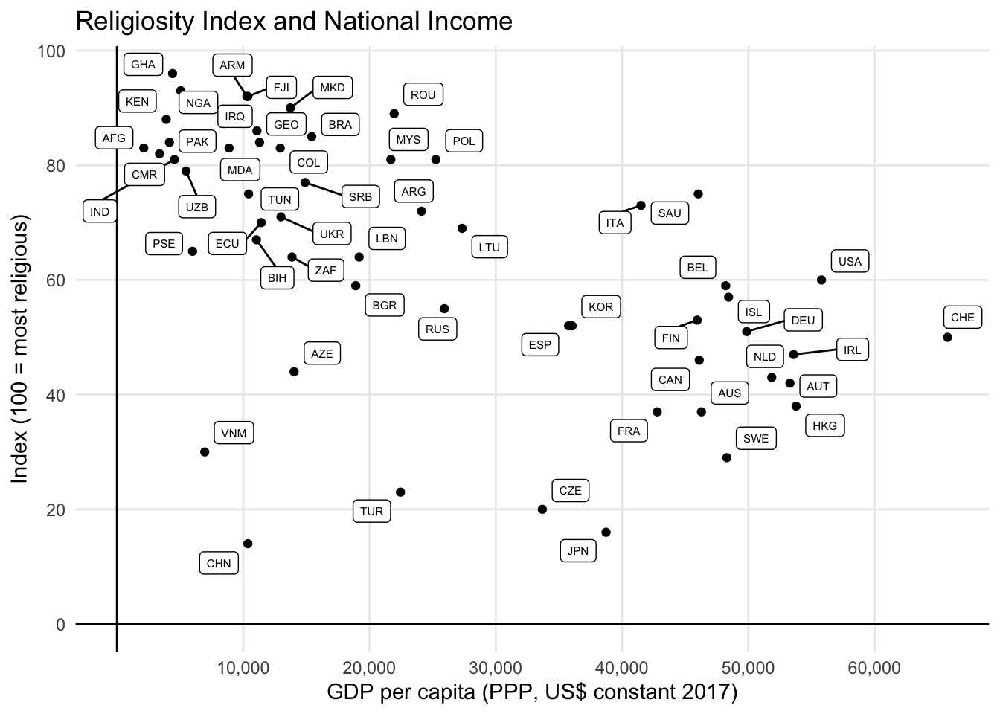
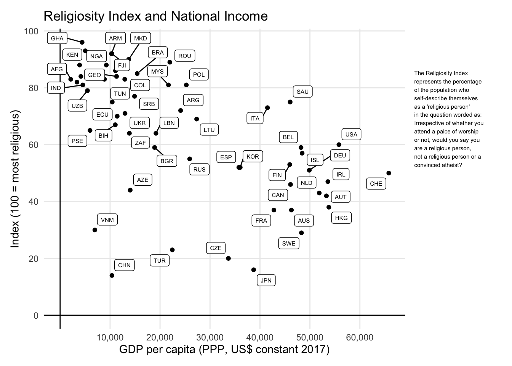
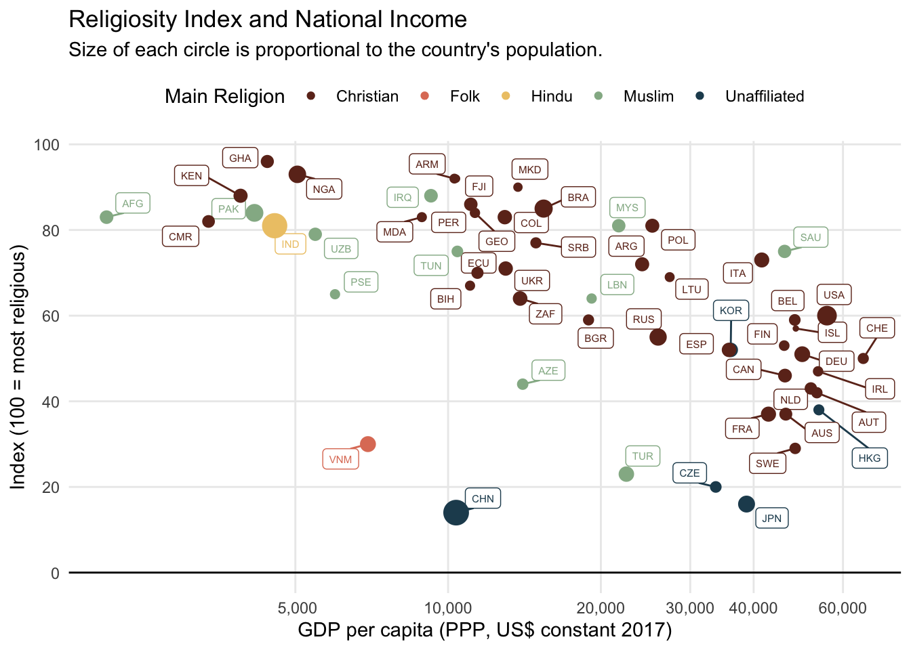

library(dplyr)
library(stringr)
library(countries)
library(ggplot2)Visualização de Dados
Como parte do curso de Inferência Estatística, oferecido pela Duke University, eu tive de ver um gráfico abominável. O gráfico abaixo faz parte de um press release da WIN-Gallup International de 2012. Ele mostra a relação entre religiosidade, mensurada por um índice que varia de 0 a 100, e o PIB per capita de vários países.
A imagem abaixo foi retirada diretamente do press release e está em baixa resolução no original.

Os pecados da visualização de dados
São vários os erros da visualização acima. Talvez o mais sério seja a dificuldade de leitura dos dados. O tamanho da fonte utilizado, junto com a baixa resolução da imagem dificultam muito a interpretação dos números.
O uso excessivo de cores e emojis prejudicam a leitura do gráfico e, eventualmente, até podem levar a interpretações tendenciosas dos dados. Há também um excesso de informação nos eixos do gráfico, com as setas e cifrões. Em resumo,
Uso excessivo de cores, potencialmente tendenciosas.
Dados estão obscuros, difícil de interpretar.
Eixos com informação redundante.
Emojis cafonas.
ggplot2
Vamos usar o ggplot2 para redimir a visualização acima. Para aprender mais sobre ggplot2 vale consultar o meu tutorial e série de posts sobre o assunto.
Pacotes
Dados
Pode-se conseguir os dados diretamente do PDF linkado. Os dados brutos estão na tabela 1, página 10. Vale dizer que o press release inteiro é uma aula de como não fazer gráficos e tabelas. Para importar os dados dentro do R vale ver o meu tutorial sobre como importar dados de PDF. Outra opção, ainda mais simples é copiar os números e importar as linhas diretamente de um arquivo de texto.
relig <- as_tibble(relig)
tab_relig <- relig |>
mutate(
index = as.numeric(str_extract(value, "\\d+")),
country = str_trim(str_remove(value, "\\d+")),
iso3c = country_name(country)
) |>
select(iso3c, index)Pode-se importar os dados de PIB per capita diretamente do Banco Mundial via pacote WDI com o código abaixo. Importa-se o PIB per capita, em paridade de poder de compra (PPP) a dólares constantes de 2017. Como a pesquisa da WIN-Gallup é de 2012, vamos filtrar os dados deste ano.
gdp <- WDI::WDI(indicator = "NY.GDP.PCAP.PP.KD")
gdp <- gdp |>
as_tibble() |>
janitor::clean_names() |>
filter(year == 2012) |>
rename(gdppc = ny_gdp_pcap_pp_kd)
dat <- left_join(tab_relig, gdp, by = "iso3c")Gráfico
Na primeira versão do gráfico, usa-se geom_label_repel para plotar o nome dos países. Esta é uma solução para evitar o overplotting. Além disso, quebro alguns nomes maiores em duas linhas
ggplot(dat, aes(gdppc, index)) +
geom_point() +
geom_hline(yintercept = 0) +
geom_vline(xintercept = 0) +
ggrepel::geom_label_repel(aes(label = str_wrap(country, 12)), size = 2) +
theme_minimal() +
theme(
panel.grid.minor = element_blank()
)
Ajustando as escalas e os eixos é possível chegar num resultado bastante satisfatório.
ggplot(dat, aes(gdppc, index)) +
geom_point() +
geom_hline(yintercept = 0) +
geom_vline(xintercept = 0) +
ggrepel::geom_label_repel(aes(label = str_wrap(country, 12)), size = 2) +
scale_x_continuous(
breaks = seq(10000, 60000, 10000),
labels = scales::label_number(big.mark = ",")
) +
scale_y_continuous(breaks = seq(0, 100, 20)) +
labs(
title = "Religiosity Index and National Income",
x = "GDP per capita (PPP, US$ constant 2017)",
y = "Index (100 = most religious)",
) +
theme_minimal() +
theme(
panel.grid.minor = element_blank()
)
Uma solução alternativa para contornar os problemas de overplotting é de usar as siglas dos países, isto é, os códigos ISO3.
plot_main <- ggplot(dat, aes(gdppc, index)) +
geom_point() +
geom_hline(yintercept = 0) +
geom_vline(xintercept = 0) +
ggrepel::geom_label_repel(aes(label = iso3c), size = 2) +
scale_x_continuous(
breaks = seq(10000, 60000, 10000),
labels = scales::label_number(big.mark = ",")
) +
scale_y_continuous(breaks = seq(0, 100, 20)) +
labs(
title = "Religiosity Index and National Income",
x = "GDP per capita (PPP, US$ constant 2017)",
y = "Index (100 = most religious)",
) +
theme_minimal() +
theme(
panel.grid.minor = element_blank()
)
plot_main
Podemos também acrescentar o texto informativo, ao lado do gráfico usando o pacote patchwork. Pode-se ver o resultado final abaixo. O gráfico está mais sucinto e informativo, ainda que muito menos colorido.
library(patchwork)
txt <- "The Religiosity Index represents the percentage of the
population who self-describe themselves as a 'religious person' in the question worded as: Irrespective of whether you attend a palce of
worship or not, would you say you are a religious person, not a
religious person or a convinced atheist?"
df = tibble(x = 1, y = 1, label = txt)
plot_txt = ggplot(df) +
geom_text(aes(x, y, label = str_wrap(label, width = 30)), hjust = 0, size = 2) +
theme_void()
panel = plot_main +
theme(
plot.margin = margin(5, 100, 5, 5)
) +
inset_element(plot_txt, left = 0.75, 1, 1.3, 0.4)
panel
Um pouco a mais
Para tornar o gráfico mais interessante podemos combinar o índice de religiosidade com as religiões predominantes de cada país. Os dados são da PewResearch Center e foram coletados no meu outro post. Pode-se também fazer o download deles diretamente do meu GitHub.
tab_religion = religion |>
filter(share == max(share), .by = "iso3c")
dat = left_join(dat, tab_religion, by = "iso3c")
dat = dat |>
filter(!is.na(religion)) |>
mutate(
religion = str_replace(religion, "unaffil", "unaffiliated"),
religion = str_to_title(religion),
religion = factor(religion)
)Para minha visualização, vou mapear cada religião numa cor diferente. Além disso vou usar uma escala log para reduzir a variância (e distorção visual) dos dados de renda per capita. Por fim, vou mapear o tamanho da população de cada país para o tamanho de cada círculo.
O resultado final é um gráfico bastante interessante. Vê-se que a maior parte dos países é predominantemente de religão cristã. Há um grupo de países cristãos europeus, de alta renda, e baixa religiosidade; um grupo de países cristãos latino-americanos, de renda média e alta religiosidade; e, finalmente, um grupo de países cristãos africanos, de renda bastante baixa, mas com religiosidade similar à do último grupo.
Em poucos países, a maior parte da população não segue uma religião. É o caso, por exemplo, de Hong Kong, Japão e China. Vale notar que os principais países de maioria budista não foram contemplados no estudo da WIN-Gallup (e.g. Tailândia, Mianmar, etc.).
Por fim, é interessante notar como a variabilidade da correlação entre as variáveis aumenta conforme aumenta a renda do país. Na faixa de 20 a 30 mil, por exemplo, temos a Polônia, de maioria cristã, com índice próximo de 80 e a Turquia, de maioria muçulmana, com índice próximo de 20.
ggplot(dat, aes(log(gdppc), index, color = religion)) +
ggrepel::geom_label_repel(aes(label = iso3c), size = 2) +
geom_point(aes(size = sqrt(country_population))) +
geom_hline(yintercept = 0) +
scale_x_continuous(
breaks = log(c(5000, 10000, 20000, 30000, 40000, 60000)),
labels = format(c(5000, 10000, 20000, 30000, 40000, 60000), big.mark = ",")
) +
scale_y_continuous(breaks = seq(0, 100, 20)) +
scale_color_manual(
name = "Main Religion",
values = MetBrewer::met.brewer("Hokusai1", 5)
) +
guides(size = "none") +
labs(
title = "Religiosity Index and National Income",
subtitle = "Size of each circle is proportional to the country's population.",
x = "GDP per capita (PPP, US$ constant 2017)",
y = "Index (100 = most religious)",
) +
theme_minimal() +
theme(
legend.position = "top",
panel.grid.minor = element_blank()
)